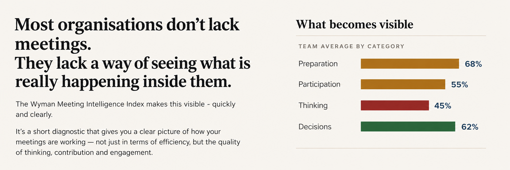
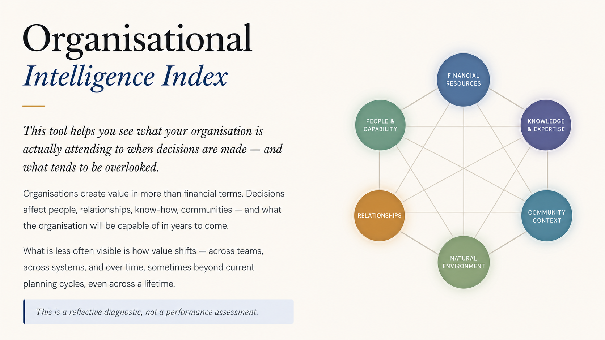

Digital companions for deeper thinking, better meetings, and sharper organisational insight.
The suite starts with meetings, because meetings are where much of an organisation's thinking becomes visible — who speaks, who is heard, what gets repeated, what is avoided, and whether the conversation produces clarity or simply more activity.
From there, the tools open up a wider question: what is the organisation paying attention to, and what might it be missing?
A short but substantial diagnostic that reveals what is actually happening in your meetings — the quality of thinking, who speaks and who is heard, what gets avoided, and what the numbers alone will never show. Completed by individuals and aggregated across a team, it produces a report that becomes a starting point for honest conversation.
The MII is a short diagnostic that gives a clear picture of how your meetings are actually working — the quality of thinking, contribution and engagement, not just efficiency. Completed individually and aggregated across a team, it produces a shared picture based on evidence rather than opinion or guesswork.
What it makes visible:
The result is a starting point for honest conversation — and a baseline you can measure against over time.

Example team report — illustrative data
A deeper, structured lens for exploring where organisational attention is going — what gets discussed, measured, protected, avoided or missed, and where change may need to begin.
Organisations create value in more than financial terms. Decisions affect people, relationships, know-how, communities — and what the organisation will be capable of in years to come. The OII draws on the Six Capitals framework to make that wider picture visible, so a team can see what it is actually investing in and give deliberate attention to what matters most.
This is a reflective diagnostic, not a performance assessment.

The Six Capitals framework applied to organisational decision-making
A guided reflection tool developed for use alongside Thinking Environment workshops and programmes — helping participants carry the quality of attention, equality and ease back into everyday work.
A guided reflection tool developed for use alongside Three Horizons work — helping people reflect on present pressures, emerging possibilities, and the future they are trying to serve.
These tools are currently introduced as part of client work and selected programmes. If you're curious whether they might be useful in your context, the best starting point is a conversation.
Book a discovery call →